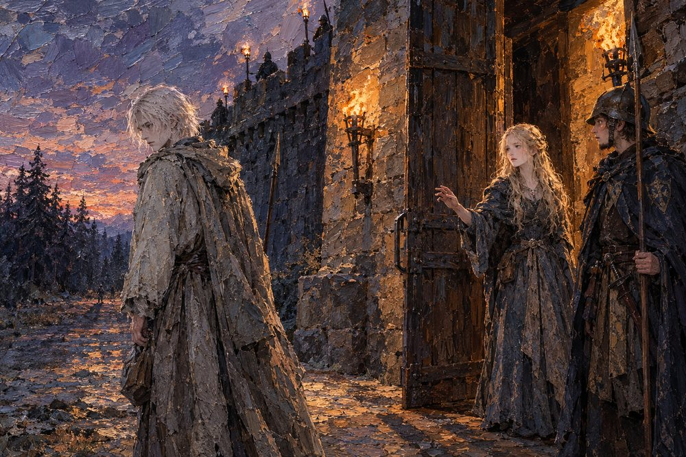

Record 7 of 15
The gate of Hartenmark
At Hartenmark's gate the guards open for Hildegund, which no soldier has done since the night Vahlreth fell. Vara stops a spear's length short, says A king's gratitude has a way of becoming a king's certainty, then I would rather remain a rumor, and walks back toward the trees, unhurried.
At dusk under a purple and orange sky, a pale fair-haired man in a long hooded grey-brown cloak walks away to the left with his head bowed and his back to a torch-lit stone gate, while at the right a young woman with long wavy fair hair in a dark gown holds out one hand toward him from the open gate and a helmeted guard with a spear watches, torch-bearing sentries on the wall above and dark fir trees on the far side of the road.